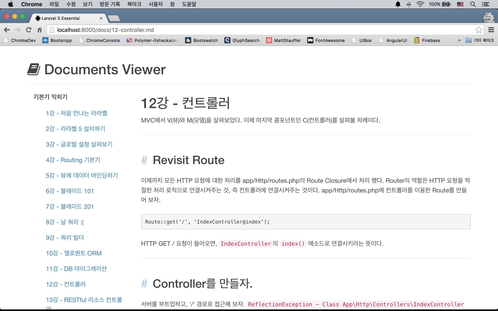
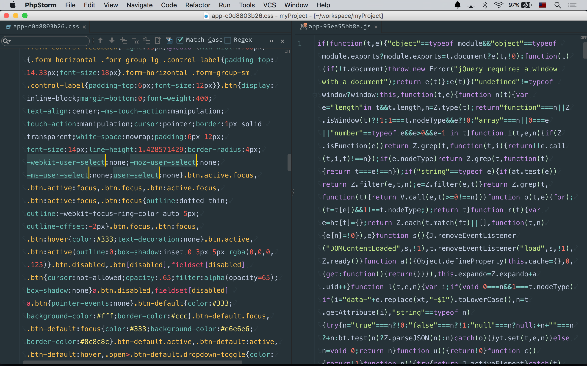

실전 프로젝트 1 - Markdown Viewer
29강 - Elixir, 만병통치약?
필독 프론트엔드에 관심이 없다면 이 강좌를 읽을 필요 없다.
Elixir('엘릭서'라 읽음)은 만병통치약을 뜻하는 단어이다. 라라벨의 Elixir란 이름은 어디에서 유래되었는 지 모르겠다. Elixir는 여러 기능을 가지고 있지만, 함축하자면 프론트엔드 리소스, 그러니까 CSS 와 Javascript 같은 리소스의 빌드를 자동화하는 도구라고 생각할 수 있다. 여기서 말하는 빌드란 Minification, CSS Vendor Prefixing, 여러 파일 병합, Sass/Less/Coffee/Babel 스크립트의 컴파일, ... 등을 의미한다. 프론트엔드 빌드 자동화를 수행하는 구현체는 Ruby on Rails 에서 Asset Pipeline 이란 이름으로 세상에 먼저 소개되었고, 이후 Django Pipeline 등 여러 프레임웍에서 따라한 것으로 필자는 알고 있다. 라라벨도 그중 하나!!
라라벨 5 버전이 출시되고 Elixir 가 공개되기 이전에 개발자들은 Gulp나 Grunt를 이용하여 빌드 자동화 스크립트를 작성해 왔다. 하지만 라라벨 5의 Elixir는 기존 빌드 스크립트들의 복잡함과 어려움을 극도로 단순화하여, 초보자도 쉽게 사용할 수 있는 API를 제시하고 있다. (그럼에도 불구하고, 여전히 어렵고 복잡하다.)
필요한 프론트엔드 리소스 정의
우리 프로젝트에 필요한 프론트엔드 리소스는 무엇인가? 앞선 강좌를 통해 우린 이미 Twitter Bootstrap을 가져다 쓴 바 있다. 이번 강좌에서는 CDN 버전을 그대로 사용하지 않고, 우리 서비스의 로컬 리소스로 추가할 것이다. 그 외 아이콘을 쓰기 위한 FontAwesome, 앞으로 계속 진행될 학습을 위해 이 프로젝트 전용 스타일시트와 자바스크립트 파일을 만들 것이다. 강좌를 진행하면서 이 목록에 더 많은 프론트엔드 리소스들이 추가될 것이다.
- Twitter Bootstrap
- FontAwesome
- resources/assets/sass/app.scss
- resources/assets/js/app.js
이번 강좌를 통해, 위에 나열된 2개의 외부 의존성과 내가 만든 2개의 리소스에 대한 빌드 자동화 방법을 배워볼 것이다.
필요한 글로벌 툴들 설치
먼저 nodejs가 필요하다. 공식 사이트를 방문한 후, 인스톨러를 다운로드 받아 클릭-클릭으로 설치할 수 있다. 이 글을 쓰는 시점에 4.2.2 LTS 버전과 5.0 두 개의 버전이 존재하는데, 4.2.2 LTS를 받자. 인스톨러를 통해 node 런타임과 npm (node package manager)가 동시에 설치된다.
$ node --version # v4.2.2
$ npm --version # 2.14.7Elixir는 Gulp 툴의 Wrapper이다. Gulp에 의존한다는 얘기~ 고로, 설치하자. 개발 머신 전체에서 gulp란 명령을 쓸 수 있도록 글로벌로(-g)로 설치한다.
$ sudo npm install -g gulp
$ gulp --version # 3.9.03rd Party(남이 만든 것이란 의미. 내껀 1st Party라 한다) 스타일시트와 자바스크립트 리소스를 관리하기 위해 Bower 툴을 설치하자.
$ sudo npm install -g bower
$ bower --version # 1.6.5여기까지 작업은 다른 프로젝트에서도 계속 사용하게 될 글로벌 패키지들의 설치로, 최초 딱 한번만 수행하면 된다. 이 다음부터 설명하는 것은 매 프로젝트마다 해 주어야 하는 설치 작업이다.
Elixir 의존 패키지 설치 및 최초 실행
Elixir가 의존하는 node 패키지들을 설치하자. 설치할 패키지들은 package.json 파일에 정의되어 있으며, 라라벨 프로젝트가 생성될 때 같이 생성되었다. 아래 작업은 라라벨에서 composer install 했던 것과 동일한 작업이라 생각하면 된다.
$ npm installnode_modules 폴더 아래에 뭔가 잔뜩 설치되었을 것이다. Elixir가 잘 동작하는지 확인해 보자. 아래 코맨드를 수행하기 전에 public/css 디렉토리가 있는지 확인해 보자. 없을 것이다. 코맨드 실행 후 다시 확인해 보자.
$ gulpBower 패키지 설치
php/composer.json, nodejs/package.json 처럼 Bower 용 패키지들을 담을 레지스트리 파일인, bower.json 을 만들자. 또, .bowerrc 파일로 Bower 패키지들의 설치 위치도 변경하자 (디폴트는 프로젝트 루트의 bower_components). 또, .gitignore 파일에 Bower 패키지 저장소가 버전 컨트롤에서 제외되도록 정의해 놓자.
$ touch bower.json && echo '{"name":"myProject"}' > bower.json # bower.json 파일을 만들고, JSON 오브젝트를 써 놓는다.
$ touch .bowerrc && echo '{"directory":"resources/assets/vendor","analytics":false}' > .bowerrc
$ echo '/resources/assets/vendor' >> .gitignore # >> 은 기존 파일에 내용 append의 의미다.Bower 패키지를 설치하자. --save-dev 는 bower.json 파일에 devDependencies 로 써 놓는다는 의미이다. 버전 컨트롤에서 제외시켰는데, bower.json에 의존성을 써 놓았기 때문에, 다른 개발자가 프로젝트의 버전 컨트롤 저장소를 clone/pull 했을 때 $ bower install 코맨드로 의존성을 설치할 수 있다. 이 강좌에서는 scss 문법을 이용할 것이라, bootstrap-sass 패키지를 설치했다. resources/assets/vendor 디렉토리에 설치한 패키지들이 있는지 확인해 보자.
$ bower install bootstrap-sass --save-dev
$ bower install font-awesome --save-dev휴~ 이제 빌드 스크립트를 쓰자.
$ gulp 명령에 반응하는 스크립트는 프로젝트 루트에 위치한 gulpfile.js 이다. 아래는 sass 컴파일하고, 자바스크립트들을 머지한 후, 파일 이름에 버전을 매기고, fonts 파일을 정해진 위치에 배포하는 gulpfile.js 스크립트이다.
var elixir = require('laravel-elixir');
elixir(function (mix) {
mix
.sass('app.scss')
.scripts([
'../vendor/jquery/dist/jquery.js',
'../vendor/bootstrap-sass/assets/javascripts/bootstrap.js',
'app.js'
], 'public/js/app.js')
.version([
'css/app.css',
'js/app.js'
])
.copy("resources/assets/vendor/font-awesome/fonts", "public/build/fonts");
});Elixir의 Javascript API 들은 대부분 관례로 정해진 상대 경로를 기준으로 하므로, 문서를 잘 살펴보고 이용해야 한다. 필자가 아는 관례들은 아래에 정리해 두었다.
| API | Base Directory | Description |
|---|---|---|
less(src, output, options) |
resources/assets/less | less 문법으로 써진 스타일시트를 css로 컴파일 |
sass(src, output, options) |
resources/assets/sass | sass, scss 문법으로 써진 스타일시트를 css로 컴파일 |
styles(styles, output, baseDir) |
resources/assets/css | css 문법으로 써진 파일을 읽어서 머지하고 public/css로 배포 |
coffee(src, output, options) |
resources/assets/coffee | coffee 문법으로 써진 자바스크립트를 js로 컴파일 |
babel(scripts, output, baseDir, options) |
resources/assets/babel | ES6 또는 7 문법으로 써진 자바스크립트를 js로 컴파일 |
scripts(scripts, output, baseDir) |
resources/assets/js | js 파일을 읽어서 머지하고 public/js로 배포 |
copy(src, output) |
프로젝트 루트 | src 파일/디렉토리를 output으로 복사 |
version(src, buildPath) |
public | src로 넘겨 받은 css, js 파일을 버전을 부여하여 public/build/css, public/build/js 디렉토리로 배포 |
Bootstrap과 FontAwesome의 스타일시트들은 styles() API를 이용하지 않고, app.scss에서 import 하였다. 이 과정과 무관하므로 app.scss에 작성된 내용들은 설명하지 않으므로, 소스코드를 살펴 보기 바란다.
@import "../vendor/bootstrap-sass/assets/stylesheets/bootstrap";
@import "../vendor/font-awesome/scss/font-awesome";
...Version & Cache Busting
브라우저 입장에서 보면 app.css 파일은 정적(static) 파일이다. 즉, 캐싱 기능이 있는 브라우저에서, 웹 서버에 요청을 해서 304 Not Modified 응답을 받으면, 브라우저는 로컬 캐시 저장소에 가지고 있던 파일을 사용한다. 웹 서버는 바보라 정적 파일의 변경을 눈치채지 못할 수 있다. 그래서 개발측에서 수정한 파일의 이름이 같으면, 캐시 정책이 만료되기 전에는, 웹 서버는 app.css 파일에 대한 브라우저의 요청에 계속 304로만 답하게 된다. 변경된 프론트엔드용 정적 리소스가 서비스에 바로 반영될 수 있도록 하는 테크닉이 Cache Busting의 핵심이다. 과거에는 app.css?t=1447665283 와 같이 랜덤 스트링을 붙여 브라우저가 매번 새로운 파일을 받아가도록 하기도 했었다.
라라벨 Elixir에서는 version() API를 이용해서 Cache Busting을 자동화 해 준다. 빌드된 파일들은 public/build 디렉토리에 저장되고, 뷰에서 elixir() Helper를 이용해서 사용할 수 있다. $ gulp 명령을 실행할 때 마다, public/build 아래의 .js, .css 파일명이 변경되는 것을 확인할 수 있을 것이다. 빌드를 위해 생성된 중간 파일들은 필요 없으므로, 버전 컨트롤에서 제외하자.
$ echo /public/css >> .gitignore
$ echo /public/js >> .gitignoreCache Busting을 사용할 수 있도록 resources/views/master.blade.php 를 수정해 보자. {{ elixir('css/app.css') }}, {{ elixir('js/app.js') }}를 주목해 보자. elixir() Helper는 public/build/rev.manifest.json 의 내용을 읽어서 가장 최신으로 빌드된 리소스의 파일명을 쓸 수 있도록 하는 기능을 한다.
<!doctype html>
<html lang="en">
<head>
<meta charset="UTF-8">
<meta http-equiv="X-UA-Compatible" content="IE=edge">
<meta name="viewport" content="width=device-width, initial-scale=1, user-scalable=no">
<title>Laravel 5 Essential</title>
<link rel="stylesheet" href="{{ elixir('css/app.css') }}">
@yield('style')
</head>
<body>
<div class="container">
@yield('content')
@include('footer')
</div>
<script src=" {{ elixir('js/app.js') }}"></script>
@yield('script')
</body>
</html>췍!
이제 카드를 까보자. resources/assets/sass/app.scss, resources/views/docs/index.md를 더 수정했다. 거듭말하지만, 프론트엔트 코스가 아니므로 자세한 설명은 하지 않으니, 코드를 참조하기 바란다.

참고 28강에서 우리가 캐시 기능을 추가했던 것을 기억하는가? 스타일시트나 뷰를 변경한 후, $ php artisan cache:clear를 해서 기존 캐시를 지워주어야 변경된 내용을 확인할 수 있다. 개발기간 중에는 불편할 수 있으니, 컨트롤러에서 캐시 기능을 주석처리해 놓는 것도 좋다. 다만, 버전 컨트롤에 업로드하기 전에 반드시 주석을 풀어줘야 한다.
참고 Elixir 에는 liveReload 유사 기능을 내장하고 있다. 파일이 변경되면 브라우저에 바로 반영해 주는 기능이다. browserSync() 기능을 사용하려면, 공식문서를 확인해 보자.
production 빌드
css vendor prefix, css minify, js uglify 까지 하면, production 환경에 적합한 프론트엔드 리소스를 빌드할 수 있다. --production 옵션을 이용하자.
$ gulp --production